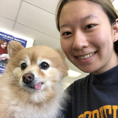
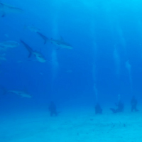
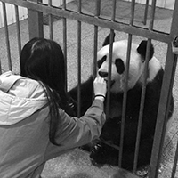
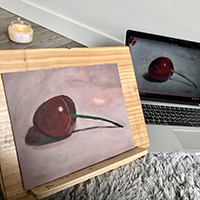

Random facts

I'm a dog person. My favorite dog breeds are samoyeds, huskies and golden retrievers. This is a photo of me and Bao Bao, the dog in the shipping office downstairs of my apartment.

I love brains. This is a picture of me and a 3-D printed version of my brain I was gifted after completing an fMRI experiment as a subject.

I'm a scuba diver. This is a photo of me and some other divers sitting on the bottom of the sea watching a group of sharks swimming by in the caribbean out of the Bahamas.

I volunteered as a panda keeper in a panda reservoir in Sichuan, China. In this photo, I'm feeding a momma bear her specialty carrot cake packed with vitamins and minerals that she couldn't get from eating bamboo.

I'm learning acrylics painting, as an adult! This is my first work.